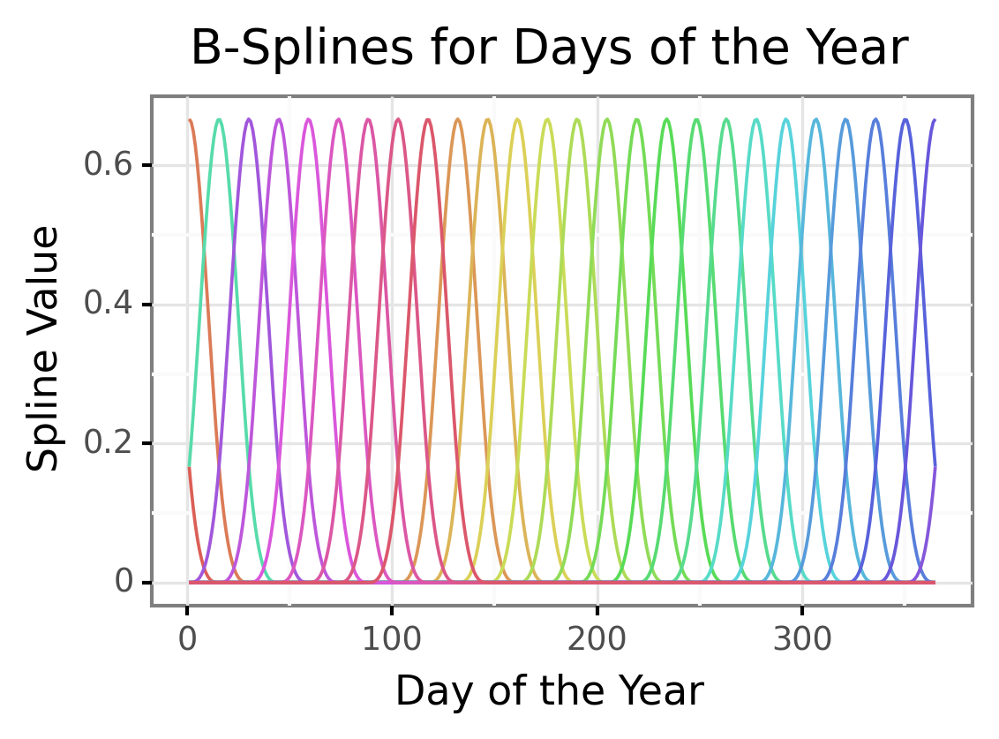
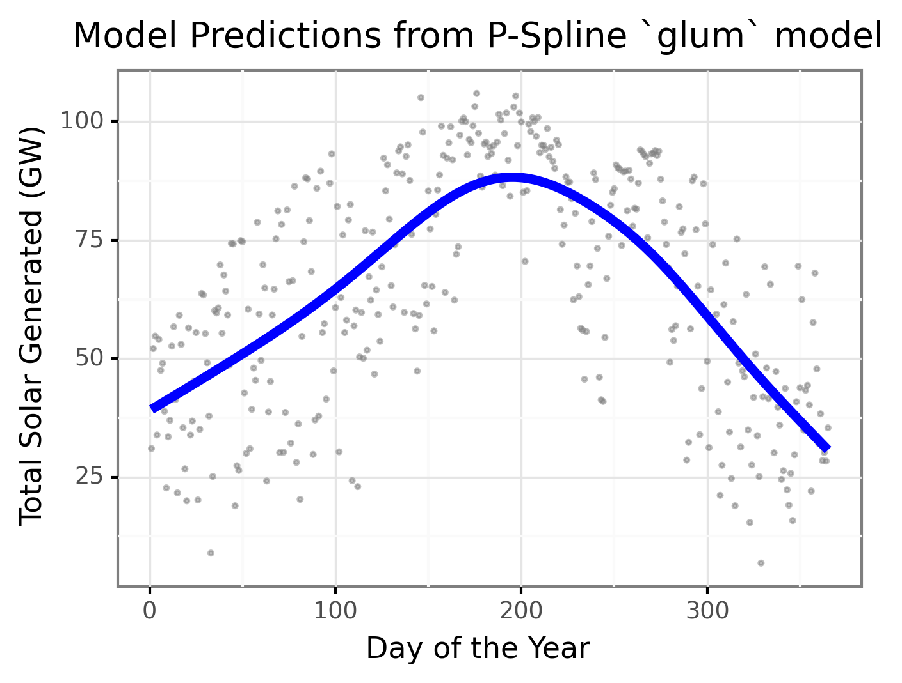
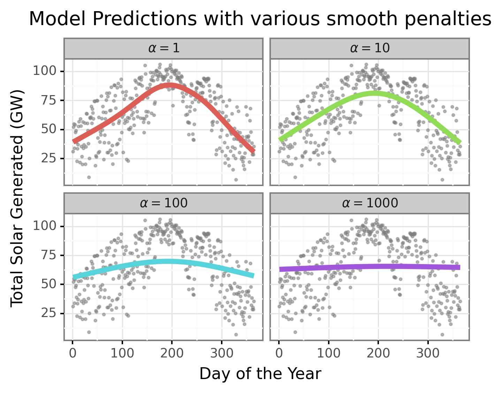
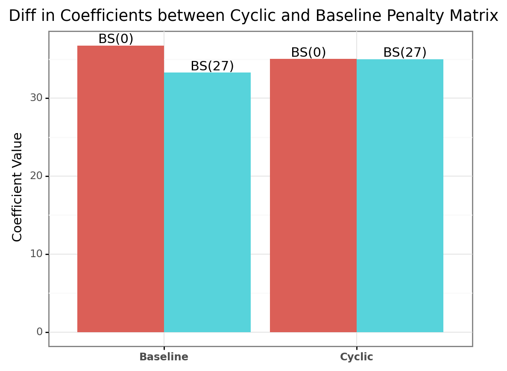
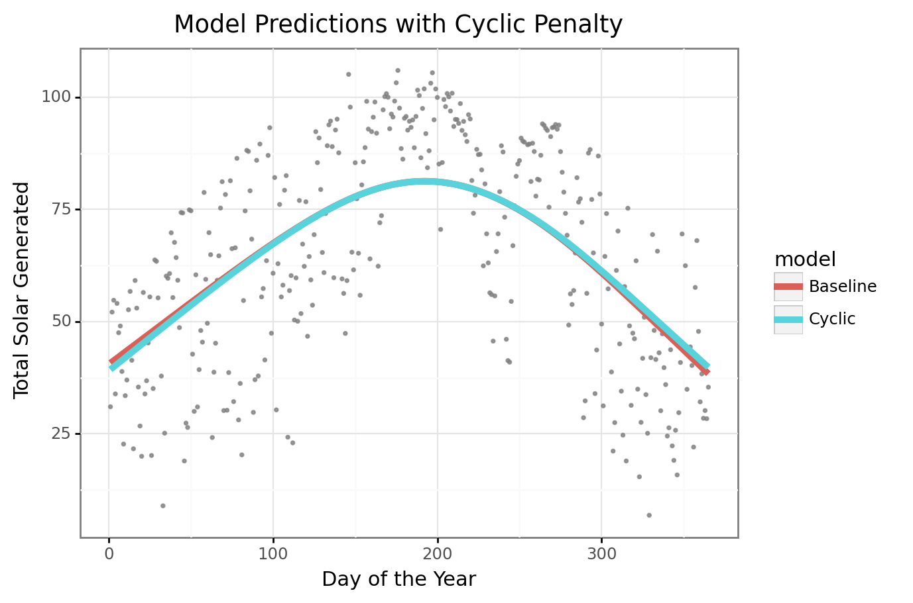

/Users/mm/Documents/Data Science/Blog Posts/weighting_sampling/lib/python3.7/site-packages/ipykernel_launcher.py:5: FutureWarning: Series.dt.weekofyear and Series.dt.week have been deprecated. Please use Series.dt.isocalendar().week instead.Building a Wrapper for GAMs in glum
I recently discovered a new python library for fitting GLMs called glum. This package is developed not only to be fast but also allows custom penalties for different terms in the model, as well as including your own penalty matrix in your model fitting. This could allow us to include spline terms in our models ala GAMs fit using pygam or mgcv in R. The speed and flexibility is enticing enough that I thought it would be fun to begin building some tools that allow us to use penalized splines in glum and learn more to potentially assist with including this functionality in the package itself.
My goal in this post is to work through a workflow to combine the basis splines that scikit-learn can now produce with a custom difference matrix times as inputs to a glum model that will “think” its just fitting a normal GLM. Then we can work on buidling out a more comprehensive workflow in later posts.
Background Info
If you are unfamiliar with Penalized Splines I would highly encourage reading A Crash Course on P-Splines from Eilers and Marx. Basically a P-Spline (Penalized Spline) is a basis spline with a custom penalty matrix that enforces constraints on the spline coefficients. Normally this constraint is just smoothness (we don’t want the neighboring spline coefficients to differ too much unless the data forces it in that direction), but it can also be extended to cyclic constraints (e.g. the first and last week of an annual effect could be equal) or monotonic constraints. Their big takeaway is that you can enforce these constraints just with a well designed penalty matrix. Since glum allows us to pass our own penalty matrix for the model coefficients we should be able to recreate P-Splines in our own model.
Generating B-Splines
Basis Splines are the unpenalized splines that give our model its flexibility. There are many resources to learn more about them including the Crash Course I linked to above so I won’t get into them here. As of version 1.0 scikit-learn has included a SplineTransformer in its preprocessing module. This will generate our B-splines for a given feature in our model. Since the point of this post isn’t really to explain what B-splines are I’ll just show the end product of splines we end up with.

Each colored line is an individual B-spline that covers a range of our original feature, the days of the year. I like to think of it as each spline is only “activated” over a small portion of the range of values of the original feature. But for any given feature value there will be 3 active splines at that value (the degree of the spline matches this number). We take these “raw” B-splines and then weight them and sum them together to predict our dependent variable; using them as features to a regression model does this automatically.
The Model
Now that we have our B-spline features to use in our model we need our penalty matrix. Because we can have many B-splines across the feature distribution we need a way to prevent overfitting. A common method for reduce overfitting is to enforce “smoothness” within the model. If you want to read more about why we choose this value to penalize I would recommend Simon Wood’s book on Generalized Additive Models. Smoothness can be expressed as saying we don’t want the coefficients of neighboring splines to differ too much. Since our splines multiplied by the coefficients contribute to the prediction at neighboring regions of our original feature distribution this will cause the entire predicted curve to be “smooth”. In math we might have a series of coefficients \(\beta_i\) and we need to keep track of the differences between successive pairs. \[ Penalty = (\beta_1 - \beta_0) + (\beta_2 - \beta_1) + ... \]
This is called a difference matrix and has a built in function in numpy for us to use. We actually use the 2nd difference matrix, which is the difference between the differences of the coefficients, for even smoother coefficients.
## We feed np.diff a diagonal matrix of 1's for each of our splines
## n = 2 tells us we want the 2nd difference
## axis = 0 is to calculate the difference across the rows
penalty_matr = np.diff(np.diag(np.ones(num_splines)), n = 2, axis = 0)
p2 = np.dot(penalty_matr.T, penalty_matr)In our optimization function we simply use the difference matrix directly with the coefficient vector. However glum requires a (n_features, n_features) matrix and we lose a row everytime we do the difference operation. We can simply pass the transpose times the original difference matrix to get back to a square penalty matrix. This actually matches what the solution would be if we were to solve for the coefficients directly (\(\beta * D^TD * \beta\) / w * D'D * w ), so I think this is fine. Now we just need to build our model using glum
daily_solar_gam = GeneralizedLinearRegressor(alpha = 1, P2 = p2, fit_intercept = False)
daily_solar_gam.fit(X = daily_solar_spline, y = daily_solar_df['power_gw'])It’s that easy, lets look at our predictions.

We now have a way to include smoothing spline terms in our GLM in glum! We can use glum to easily see different levels of the penalty amount and how that forces different shapes of our curve.

We could then use a more formal evaluation criteria like GCV or AIC to pick the optimal level of smoothing. Here is looks like \(\alpha = 10\) is the optimal level of smoothing, to use the glum notation.
Maybe you are asking why this is a big deal; we could just include the B-splines as features in any model and get this non-linear relationship. The penalties and difference matrix allow us to control the smoothing directly. If we had simply used an L2 penalty without the difference matrix we would penalize the size of the coefficients but not the smoothness; this could produce more jumps and rougher edges at the knot locations as one spline cycles on and another cycles off. And we can also incorporate more constraints into the penalty matrix that give us even more control over our model. Lets say that we think the daily solar output for the year should be cyclical, i.e. the first and last day should produce the same amount of energy on average. This ignores any growth within that year of new solar panels, but this is just a toy example so assume that we are only estimating the annual component for now. We can do this by simply adding a row to our penalty matrix that penalizes the difference between the last coefficient and the first. Since the last coefficient corresponds to the very end of the year, and the first coefficient to the very beginning of the year, this will add a penalty to make them similar unless the data overrides this constraint. Here is how we would make that change to our penalty matrix:
cyclic_row = np.zeros(penalty_matr.shape[1])
# D * B means we want (B_0 - B_26)
cyclic_row[0] = 1
cyclic_row[-1] = -1
cyclic_matr = np.vstack([penalty_matr, cyclic_row])
cyclic_penalty = 10 ## matches the baseline model we will use
p2_cyclic = np.dot(cyclic_matr.T, cyclic_matr)Fitting a model with p2_cyclic is just as easy as our baseline model.
daily_solar_gam_base = GeneralizedLinearRegressor(alpha = cyclic_penalty, P2 = p2, fit_intercept = False)
daily_solar_gam_base.fit(X = daily_solar_spline, y = daily_solar_df['power_gw'])
daily_solar_gam_cyclic = GeneralizedLinearRegressor(alpha = cyclic_penalty, P2 = p2_cyclic, fit_intercept = False)
daily_solar_gam_cyclic.fit(X = daily_solar_spline, y = daily_solar_df['power_gw'])
base_coefs = daily_solar_gam_base.coef_
cyclic_coefs = daily_solar_gam_cyclic.coef_Now we can compare the two end-coefficients between the models to show our cyclic penalty has made the endpoints much similar.

Lets see how the overall curve shape looks with this new penalty compared to the baseline model.

The cyclic model is pretty similar to the original model’s curve because the data is already pretty symetric. But, now we can ensure our coefficients reflect exactly what we want them to measure.
I hope you enjoyed this brief introduction to both P-splines and the glum package. I’m excited to explore this new package more and hopefully assist with getting this capability folded into the package itself.
You can view the python code for this blog post on my github here